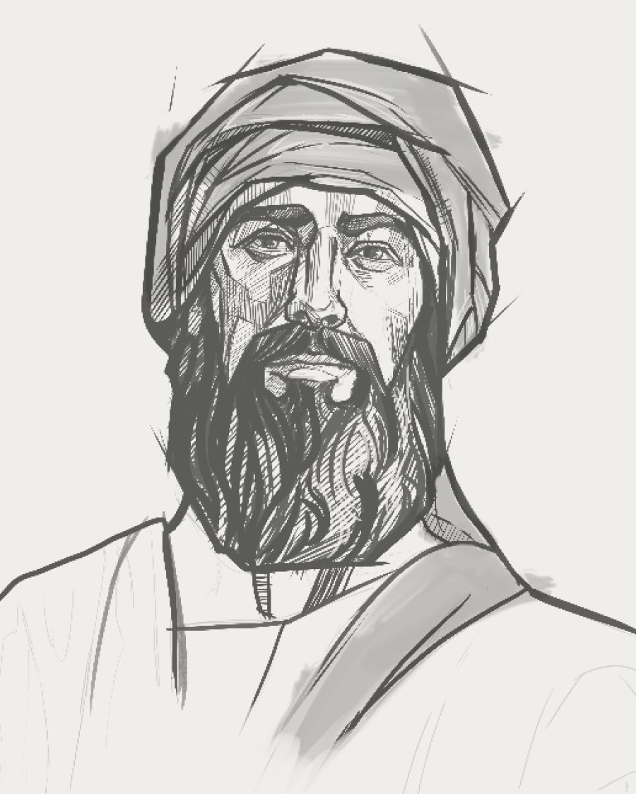

Ezekiel means “God Strengthens.” While the prophecies he relates contain many warnings, the overall message is in harmony with the meaning of his name and strengthens the faith of those who want to give God pure worship.
CONTEMPORARY PROPHETS

JEREMIAH,
from a priestly family, served mostly in Jerusalem (647-580 B.C.E.)
HULDAH
served when the book of the Law was discovered in the temple about 642 B.C.E.
DANIEL,
part of the royal tribe of Judah, was taken to Babylon in 617 B.C.E.
HABAKKUK
likely served in Judah early in Jehoiakim’s reign
OBADIAH
prophesied against Edom, likely at the time of Jerusalem’s destruction